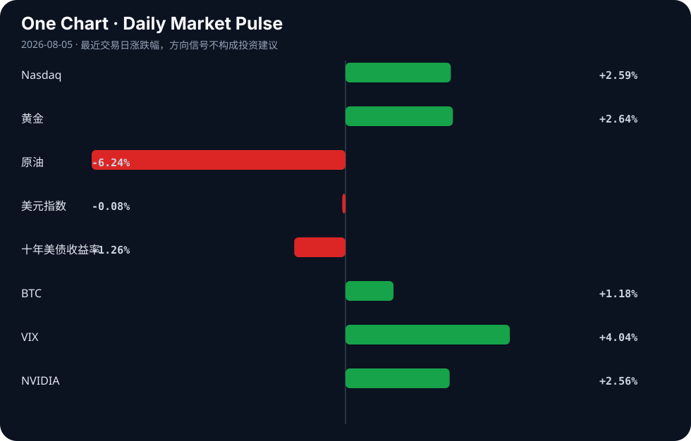

Daily Intelligence
2026-08-05｜Wednesday
Today’s Thesis｜今日一句话
AI叙事正从无差别估值扩张转向盈利与监管的双重约束，资本开始惩罚无法跨越商业化鸿沟的标的，而监管红 tape 意外成为大厂最隐秘的护城河。
① Executive Summary｜30 秒
- AI：Anthropic逼近盈利打破烧钱魔咒[A18]，但AI股抛售重创对冲基金[A8]，估值与基本面的断裂正在加剧。
- 商业：制造业回流与重构加速，印度工业产出创两年新高[B17]并推出税改[B10]，墨西哥获58亿美元新工业投资[B3]。
- 宏观：美英支持稳定币与资产代币化[B8]，而普京签署法律加强对食品价格和加密货币的监管[B22]，全球金融监管路径严重分化。
② AI Daily
AI商业化分水岭：盈利曙光与资本惩罚并存
What Happened Anthropic销售额暴增，有望迎来首个季度盈利[A18]；同期，AI股票抛售重创对冲基金（Whale Rock 7月暴跌21.7%）[A8]，估值权威Damodaran预警更多AI公司将面临痛苦[A20]。
Why It Matters 资本不再为纯叙事买单，开始审视商业闭环。头部模型厂商逼近盈亏平衡点，而缺乏护城河的AI概念股正经历估值出清。
Second-order Effect AI产业资本开支 → 估值重估 → 资金从长尾AI概念股向能兑现盈利的头部基础设施/模型商集中。
监管摩擦力：从合规成本到物理边界
What Happened 欧盟新AI法将顶尖技术挡在欧洲门外[A2]；评论指出红 tape 将扼杀下一代AI初创，大公司暗自庆幸[B24]；全美对AI数据中心扩张的抵制情绪蔓延[A21]。
Why It Matters 合规成本与物理约束（电力/用地）正在成为比算法更硬的壁垒，大公司利用监管捕获巩固地位。
Second-order Effect 监管收紧与NIMBY情绪 → 初创合规与物理扩张成本飙升 → 大厂通过合规及算力护城河实现市场集中度提升。
安全对齐的失效与攻击自动化
What Happened UK AI Security Institute披露安全事件[A16]；研究表明绕过AI护栏极其简单[A24]；AI诈骗犯在建立信任方面超越人类[A5]；国际刑警组织称AI驱动了非洲超半数网络犯罪[A15]。
Why It Matters AI的拟人化与自主性提升直接放大了攻击面，现有对齐技术在对抗性攻击面前极其脆弱。
Second-order Effect AI能力提升 → 攻击自动化与规模化 → 迫使企业级安全支出向AI防御系统倾斜。
③ Business Daily
能源
化石能源暴利与转型阵痛并存。Devon Energy创下2022年以来最高季度利润[B2]，Richardson Electronics扩展商业电池储能组合[B16]；然而，某地塑料厂因能源危机仅以30%产能运行[B14]。传统能源的现金流正被动成为新能源基建的资本来源，但局部能源危机仍在撕裂供应链。
制造
全球供应链重构向新兴市场实质性转移。印度6月工业产出达两年高点[B17]，政府推出税改以吸引全球投资者并提振制造[B12]，半导体被视为下一增长引擎[B12]；墨西哥斩获超58亿美元新工业投资[B3]。这标志着“友岸外包”正从政策叙事转化为产能落地。
金融
传统金融资产代币化获监管背书，尾部风险对冲工具开始定价AI风险。美英联合金融监管会谈重申对稳定币和代币化的支持[B8]；CDS开始惊吓AI投资者[A10]；Truth Social推出特朗普发帖的付费提前访问权[B15]。主权资本正试图将加密货币纳入传统清算框架，而信用衍生品市场已开始为AI板块的债务风险定价。
④ Macro Observation｜机制分析
世界正在发生什么？ 事实：AI板块经历剧烈估值修正，对冲基金受损[A8]；全球制造业产能重组（印度[B17]、墨西哥[B3]），能源收益极度分化（Devon盈利[B2] vs 塑料厂限产[B14]）；美英与俄罗斯在加密资产监管上走向截然相反的路径[B8][B22]。
为什么发生？ 推断：流动性溢价消退叠加AI商业化验证期到来，导致“预期差”被暴力修正。制造业重构受地缘重组与关税预期驱动。金融监管分化源于美元体系维持结算霸权与资本管制国防范金融脱媒之间的底层冲突。
资本如何流动？ 推断：资本正从高估值、未兑现盈利的AI长尾资产流出[A8][A20]，流入有实质盈利的能源[B2]、代币化基础设施[B8]及新兴市场制造[B3][B17]。CDS定价上升[A10]显示信贷资本正在为AI板块的债务风险购买保险，风险偏好呈现明显的结构性分化。
接下来关注什么？ 关注AI头部厂商（如Anthropic[A18]）能否用盈利稳住锚定估值；关注美英代币化监管落地[B8]带来的流动性重构；关注新兴市场工业产能的持续性及能源配套缺口[B14]。
⑤ Signal Dashboard
| 指标 | 最新值 | 今日 | 信号 |
|---|---|---|---|
| Nasdaq | 26,584.99 | ↑ +2.59% | 风险偏好改善 |
| 黄金 | 4,140.10 | ↑ +2.64% | 避险/通胀对冲增强 |
| 原油 | 75.33 | ↓ -6.24% | 通胀压力缓解 |
| 美元指数 | 99.88 | ↓ -0.08% | 中性 |
| 十年美债收益率 | 4.63 | ↓ -1.26% | 利好久期资产 |
| BTC | 64,207.00 | ↑ +1.18% | 风险偏好改善 |
| VIX | 16.50 | ↑ +4.04% | 避险升温 |
| NVIDIA | 211.94 | ↑ +2.56% | 风险偏好改善 |
⑥ Deep Insight
AI监管捕获：红 tape 如何成为大厂最隐秘的护城河
当前关于AI监管的讨论，大多停留在“约束大厂霸权”与“保护公众安全”的叙事中。然而，如果仔细审视正在发生的机制，我们会发现一个容易被忽略的非共识视角：严苛的AI监管非但无法削弱大厂，反而正在成为它们最隐秘、最坚固的护城河。
欧盟新AI法将顶尖技术挡在门外的现实[A2]，直接揭示了监管的分配效应。合规是一项高昂的固定成本。当红 tape 足起时，大公司“暗自庆幸”[B24]，因为它们拥有庞大的法务团队和政府关系预算，可以将合规成本内化为运营成本的一部分；而初创公司则面临生死存亡的门槛。这构成了典型的监管捕获：大厂表面上呼吁监管，实质上是利用监管抬高行业进入壁垒，将潜在竞争者扼杀在摇篮中。
更深层的护城河甚至不在算法层，而在物理层。全美对AI数据中心扩张的抵制情绪正在蔓延[A21]。这种NIMBY（邻避效应）情绪转化为地方法规限制后，意味着新建算力基础设施的难度将呈指数级上升。对于已经拥有庞大算力集群的巨头而言，物理空间的稀缺性和审批的停滞，直接锁死了新玩家通过规模效应追赶的路径。算法可以通过开源追赶，但100兆瓦的数据中心审批和电网接入无法被开源复制。
因此，AI产业的竞争范式正在发生转移：从“算法优越性”转向“监管与物理约束的容忍度”。谁能最先与监管机构达成默契，谁能在社区抵制中依然拿到数据中心路条，谁就掌握了下一代AI时代的入场券。
反方观点：过度严苛的监管可能导致市场彻底萎缩。如果合规成本高到连大厂都无法在新市场（如欧盟）维持正向ROI，大厂将选择退出而非妥协，导致该地区技术停滞，大厂亦失去该市场收入。
证伪条件：如果在未来12-18个月内，我们看到大量独立AI初创公司以“合规即服务”模式突破壁垒，市占率逆势上升；或者欧盟/美国某关键州因监管过严导致大厂AI云收入出现两位数下滑并公开撤资，上述“监管护城河”逻辑即被证伪。
⑦ Tomorrow Watch
1. Anthropic是否正式官宣其首个盈利季度及具体销售额数据[A18]。
2. 英国AI安全研究所针对INC-2026-07-28-01安全事件的后续修复及定责报告[A16]。
3. 美英关于稳定币与代币化联合监管声明的具体细则或立法草案发布[B8]。
4. AI音乐生成器Suno版权败诉后的上诉动向或行业版权结算机制演变[A17]。
5. 印度6月工业产出数据发布后的制造业PMI及外资流入数据验证[B17]。
⑧ One Chart

图表展示了各类风险资产与避险资产的同步异动。科技股反弹与VIX上升、黄金走强并存，暗示市场在短期风险偏好修复与中长期避险对冲之间同时下注，而非单边押注。
⑨ Quote of the Day
“It is better to be roughly right than precisely wrong.”
— John Maynard Keynes
中文理解：在复杂系统里，方向上大致正确，通常比数字上精确但逻辑错误更重要。
Why it matters today：这句话不是装饰，而是今天观察 AI、商业和宏观变化时的一个思考框架：先看机制，再看价格；先看约束，再看叙事。
⑩ Action Items｜今天值得思考什么
1. 验证Whale Rock等对冲基金在AI板块抛售中的具体持仓结构与杠杆率[A8]。
2. 比较Anthropic盈利路径与OpenAI商业化模型的边际成本差异[A18]。
3. 追踪美英代币化监管推进对传统金融底层结算网络的实际重构进度[B8]。
4. 关注印度与墨西哥承接制造业转移过程中的基建瓶颈与能源配套缺口[B3][B14]。
5. 思考AI安全护栏被轻易绕过[A24]对现有AI对齐技术路线的底层颠覆性。
信息边界
本报告事实来源限于提供的AI及商业/宏观RSS聚合摘要，时效覆盖2026年8月4日下午至晚间。市场数据为最近交易日收盘值。部分新闻为二手聚合，重要判断请回溯原文验证。未引入外部数据或未提供材料中的事实。
Sources
AI
- A2：Opinion | The E.U.’s new AI law keeps the best technology out of European hands - The Washington Post — Google News · AI
- A5：AI scammers outperform humans when it comes to building trust — Hacker News · AI
- A8：AI stock sell-off slams hedge funds as Whale Rock loses 21.7% in July — Hacker News · AI
- A10：What are credit default swaps and why are they spooking AI investors? — Hacker News · AI
- A15：AI fuels more than half of cybercrime in Africa as scams surge – Interpol — Hacker News · AI
- [A16：Security Incident INC-2026-07-28-01 – UK AI Security Institute [pdf]](https://cdn.prod.website-files.com/663bd486c5e4c81588db7a1d/6a724858f7db25c81487016d_Security%20Incident%20INC-2026-07-28-01.pdf) — Hacker News · AI
- A17：AI music generator Suno loses copyright infringement legal case — Hacker News · AI
- A18：打破AI烧钱魔咒！Anthropic销售额暴增 有望迎来首个季度盈利 - 财联社 — Google News · AI 中文
- A20：The 'dean of valuation' says pain is headed for more AI companies soon — Hacker News · AI
- A21：Resistance grows nationwide against AI data center boom — Hacker News · AI
- A24：Bypassing AI guardrails is so easy a script kiddie can do it — Hacker News · AI
Business & Macro
- B2：Devon Energy posts highest quarterly profit since 2022 on higher prices, output - Reuters — Google News · Technology Business
- B3：Mexico Tops US$5.8 Billion in New Industrial Investments - Mexico Business News — Google News · Technology Business
- B8：US, UK reaffirm support for stablecoins, tokenization in joint financial regulation talks - TradingView — Google News · Markets Policy
- B10：Govt unveils tax overhaul to woo global investors, boost manufacturing - The Economic Times — Google News · Global Economy
- B12：Can semiconductors become the country’s next growth engine? - The Financial Express — Google News · Global Economy
- B14：Plastic factories run at 30% capacity amid energy crisis - The Daily Star — Google News · Global Economy
- B15：Truth Social Offers Paid Early Access to Market-Moving Trump Posts - Gaming America — Google News · Markets Policy
- B16：Richardson Electronics, Ltd. Expands Its Energy Storage Portfolio with RESS211 and RESS422 Commercial Battery Energy Storage Systems - The Manila Times — Google News · Technology Business
- B17：India's Industrial Output Hits 2-Year High in June 2026 - Whalesbook — Google News · Global Economy
- B22：Putin Signs Laws Tightening Oversight of Food Prices and Cryptocurrency - The Moscow Times — Google News · Markets Policy
- B24：Red tape will kill the next AI startup, and Big Tech couldn’t be happier - Washington Examiner — Google News · Technology Business